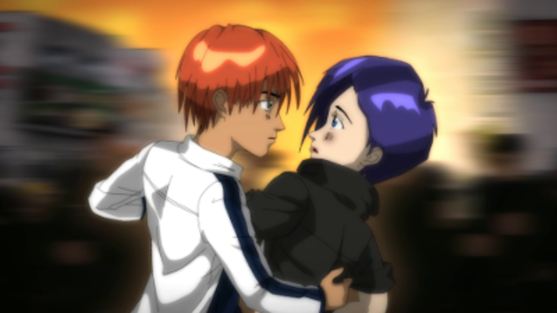
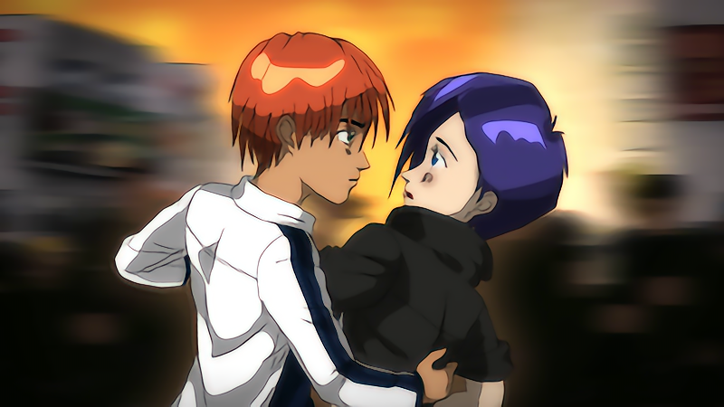

<title>Anime4Nerd: Anime Upscaler for Web Video (Anime4K)</title>
<meta name="claude:viewport-fit-sides" content="cover">
<meta name="description" content="Anime upscaler for your browser. Anime4Nerd is an extension that runs the original Anime4K shaders on any web video, live, on your GPU. 2x to 8x upscaling, six presets, nothing leaves your machine.">
<link rel="icon" href="assets/icon.png">
<link rel="preconnect" href="https://fonts.googleapis.com">
<link rel="preconnect" href="https://fonts.gstatic.com" crossorigin>
<link rel="stylesheet" href="https://fonts.googleapis.com/css2?family=JetBrains+Mono:wght@400;500;600;700;800&display=swap">
<link rel="stylesheet" href="assets/site.css">
<link rel="stylesheet" href="assets/scenes.css">

<header class="top">
  <div class="wrap">
    <a class="brand" href="#top">anime4nerd</a>
    <nav class="nav" aria-label="Sections">
      <a class="chip" href="#compare">before / after</a>
      <a class="chip" href="#how">how it works</a>
      <a class="chip" href="#presets">presets</a>
      <a class="chip" href="#fullscreen">fullscreen</a>
      <a class="chip" href="#install">install</a>
      <a class="chip" href="#changes">what's new</a>
      <a class="chip" href="privacy">privacy</a>
    </nav>
    <a class="btn primary" data-store href="https://chromewebstore.google.com/detail/anime4nerd/kblnmcdmlgeidaclnhjmcffefmkehkpm" rel="noopener">add to chrome</a>
  </div>
</header>

<main class="wrap" id="top">
  <section class="hero">
    <div>
      <div class="phead"><span>browser extension · chrome · brave · edge · firefox</span></div>
      <h1><span>Sharper</span><span class="o">anime.</span></h1>
      <p class="lede">Right in your browser. The original Anime4K neural upscaler, running live on your own GPU. Switch it on for any web video and every frame is restored and doubled in resolution, or more.</p>
      <div class="get">
        <div class="cta">
          <a class="btn primary" data-store href="https://chromewebstore.google.com/detail/anime4nerd/kblnmcdmlgeidaclnhjmcffefmkehkpm" rel="noopener">add to chrome · free</a>
          <a class="btn" href="#compare">see before / after</a>
        </div>
        <div class="avail"><span class="lab">available for</span>
        <a href="https://chromewebstore.google.com/detail/anime4nerd/kblnmcdmlgeidaclnhjmcffefmkehkpm" rel="noopener" title="Get Anime4Nerd for Chrome"><svg viewBox="0 0 24 24" aria-hidden="true"><path fill="currentColor" d="M12 0C8.21 0 4.831 1.757 2.632 4.501l3.953 6.848A5.454 5.454 0 0 1 12 6.545h10.691A12 12 0 0 0 12 0zM1.931 5.47A11.943 11.943 0 0 0 0 12c0 6.012 4.42 10.991 10.189 11.864l3.953-6.847a5.45 5.45 0 0 1-6.865-2.29zm13.342 2.166a5.446 5.446 0 0 1 1.45 7.09l.002.001h-.002l-5.344 9.257c.206.01.413.016.621.016 6.627 0 12-5.373 12-12 0-1.54-.29-3.011-.818-4.364zM12 16.364a4.364 4.364 0 1 1 0-8.728 4.364 4.364 0 0 1 0 8.728Z"/></svg><span>chrome</span></a>
        <a href="https://chromewebstore.google.com/detail/anime4nerd/kblnmcdmlgeidaclnhjmcffefmkehkpm" rel="noopener" title="Get Anime4Nerd for Brave"><svg viewBox="0 0 24 24" aria-hidden="true"><path fill="currentColor" d="M15.68 0l2.096 2.38s1.84-.512 2.709.358c.868.87 1.584 1.638 1.584 1.638l-.562 1.381.715 2.047s-2.104 7.98-2.35 8.955c-.486 1.919-.818 2.66-2.198 3.633-1.38.972-3.884 2.66-4.293 2.916-.409.256-.92.692-1.38.692-.46 0-.97-.436-1.38-.692a185.796 185.796 0 01-4.293-2.916c-1.38-.973-1.712-1.714-2.197-3.633-.247-.975-2.351-8.955-2.351-8.955l.715-2.047-.562-1.381s.716-.768 1.585-1.638c.868-.87 2.708-.358 2.708-.358L8.321 0h7.36zm-3.679 14.936c-.14 0-1.038.317-1.758.69-.72.373-1.242.637-1.409.742-.167.104-.065.301.087.409.152.107 2.194 1.69 2.393 1.866.198.175.489.464.687.464.198 0 .49-.29.688-.464.198-.175 2.24-1.759 2.392-1.866.152-.108.254-.305.087-.41-.167-.104-.689-.368-1.41-.741-.72-.373-1.617-.69-1.757-.69zm0-11.278s-.409.001-1.022.206-1.278.46-1.584.46c-.307 0-2.581-.434-2.581-.434S4.119 7.152 4.119 7.849c0 .697.339.881.68 1.243l2.02 2.149c.192.203.59.511.356 1.066-.235.555-.58 1.26-.196 1.977.384.716 1.042 1.194 1.464 1.115.421-.08 1.412-.598 1.776-.834.364-.237 1.518-1.19 1.518-1.554 0-.365-1.193-1.02-1.413-1.168-.22-.15-1.226-.725-1.247-.95-.02-.227-.012-.293.284-.851.297-.559.831-1.304.742-1.8-.089-.495-.95-.753-1.565-.986-.615-.232-1.799-.671-1.947-.74-.148-.068-.11-.133.339-.175.448-.043 1.719-.212 2.292-.052.573.16 1.552.403 1.632.532.079.13.149.134.067.579-.081.445-.5 2.581-.541 2.96-.04.38-.12.63.288.724.409.094 1.097.256 1.333.256s.924-.162 1.333-.256c.408-.093.329-.344.288-.723-.04-.38-.46-2.516-.541-2.961-.082-.445-.012-.45.067-.579.08-.129 1.059-.372 1.632-.532.573-.16 1.845.009 2.292.052.449.042.487.107.339.175-.148.069-1.332.508-1.947.74-.615.233-1.476.49-1.565.986-.09.496.445 1.241.742 1.8.297.558.304.624.284.85-.02.226-1.026.802-1.247.95-.22.15-1.413.804-1.413 1.169 0 .364 1.154 1.317 1.518 1.554.364.236 1.355.755 1.776.834.422.079 1.08-.4 1.464-1.115.384-.716.039-1.422-.195-1.977-.235-.555.163-.863.355-1.066l2.02-2.149c.341-.362.68-.546.68-1.243 0-.697-2.695-3.96-2.695-3.96s-2.274.436-2.58.436c-.307 0-.972-.256-1.585-.461-.613-.205-1.022-.206-1.022-.206z"/></svg><span>brave</span></a>
        <a href="https://chromewebstore.google.com/detail/anime4nerd/kblnmcdmlgeidaclnhjmcffefmkehkpm" rel="noopener" title="Get Anime4Nerd for Edge"><svg viewBox="0 0 24 24" aria-hidden="true" fill="none" stroke="currentColor" stroke-width="2.1" stroke-linecap="round" stroke-linejoin="round"><path d="M20.978 11.372a9 9 0 1 0 -1.593 5.773"/><path d="M20.978 11.372c.21 2.993 -5.034 2.413 -6.913 1.486c1.392 -1.6 .402 -4.038 -2.274 -3.851c-1.745 .122 -2.927 1.157 -2.784 3.202c.28 3.99 4.444 6.205 10.36 4.79"/><path d="M3.022 12.628c-.283 -4.043 8.717 -7.228 11.248 -2.688"/><path d="M12.628 20.978c-2.993 .21 -5.162 -4.725 -3.567 -9.748"/></svg><span>edge</span></a>
        <a href="https://addons.mozilla.org/firefox/addon/anime4nerd/" rel="noopener" title="Get Anime4Nerd for Firefox"><svg viewBox="0 0 24 24" aria-hidden="true"><path fill="currentColor" d="M8.824 7.287c.008 0 .004 0 0 0zm-2.8-1.4c.006 0 .003 0 0 0zm16.754 2.161c-.505-1.215-1.53-2.528-2.333-2.943.654 1.283 1.033 2.57 1.177 3.53l.002.02c-1.314-3.278-3.544-4.6-5.366-7.477-.091-.147-.184-.292-.273-.446a3.545 3.545 0 01-.13-.24 2.118 2.118 0 01-.172-.46.03.03 0 00-.027-.03.038.038 0 00-.021 0l-.006.001a.037.037 0 00-.01.005L15.624 0c-2.585 1.515-3.657 4.168-3.932 5.856a6.197 6.197 0 00-2.305.587.297.297 0 00-.147.37c.057.162.24.24.396.17a5.622 5.622 0 012.008-.523l.067-.005a5.847 5.847 0 011.957.222l.095.03a5.816 5.816 0 01.616.228c.08.036.16.073.238.112l.107.055a5.835 5.835 0 01.368.211 5.953 5.953 0 012.034 2.104c-.62-.437-1.733-.868-2.803-.681 4.183 2.09 3.06 9.292-2.737 9.02a5.164 5.164 0 01-1.513-.292 4.42 4.42 0 01-.538-.232c-1.42-.735-2.593-2.121-2.74-3.806 0 0 .537-2 3.845-2 .357 0 1.38-.998 1.398-1.287-.005-.095-2.029-.9-2.817-1.677-.422-.416-.622-.616-.8-.767a3.47 3.47 0 00-.301-.227 5.388 5.388 0 01-.032-2.842c-1.195.544-2.124 1.403-2.8 2.163h-.006c-.46-.584-.428-2.51-.402-2.913-.006-.025-.343.176-.389.206-.406.29-.787.616-1.136.974-.397.403-.76.839-1.085 1.303a9.816 9.816 0 00-1.562 3.52c-.003.013-.11.487-.19 1.073-.013.09-.026.181-.037.272a7.8 7.8 0 00-.069.667l-.002.034-.023.387-.001.06C.386 18.795 5.593 24 12.016 24c5.752 0 10.527-4.176 11.463-9.661.02-.149.035-.298.052-.448.232-1.994-.025-4.09-.753-5.844z"/></svg><span>firefox</span></a>
        </div>
        <div class="tick"><span class="chip">anime4k</span><span class="chip">webgl2</span><span class="chip">2×–8× output</span><span class="chip">no account</span><span class="chip">mit</span></div>
      </div>
    </div>

    <div class="sheet" id="sheet">
      <div class="phead"><span>the popup · live</span><span class="try"><b>click anything</b> · it works</span></div>
      <div class="tbar" aria-hidden="true"><span class="dots"><i></i><i></i><i></i></span><span class="url">your-favourite-stream.example/watch?ep=3</span><span class="x">⋯</span><span class="x me" id="me"></span></div>
      <svg class="hcur" id="hcur" viewBox="0 0 22 22" aria-hidden="true"><path d="M3 2 L3 18 L7.5 13.8 L10.5 20 L13.2 18.8 L10.3 12.8 L16.5 12.6 Z" fill="#eceded" stroke="#08090a" stroke-width="1.4" stroke-linejoin="round"/></svg>
      <div class="row" id="row">
        <div class="pp" id="pp" aria-label="A working copy of the Anime4Nerd popup">
          <div class="bar"><span class="chip">anime4k</span><span class="chip on" id="hint">on · a</span><span class="chip grow on" id="gpuchip">gpu 15.1 ms</span><span class="chip" id="clock">21:40</span></div>
          <section class="panel" id="p-src">
            <div class="panel-head"><span>playing now</span><span>1</span></div>
            <div class="source on" id="source" role="button" tabindex="0" aria-pressed="true">
              <div class="line">
                <span class="title">Starlight Academy</span>
                <label class="switch" title="Upscale this video"><input type="checkbox" id="sw" checked aria-label="Upscale this video"></label>
              </div>
              <div><span class="tag">S1 E3</span><span>The Night Before the Festival</span></div>
              <div class="meta">stream.example · <span id="res">1080p → 3840×2160 (2×)</span></div>
              <div class="hr"></div>
              <div class="state" id="state">● Upscaling</div>
            </div>
          </section>
          <section class="panel" id="perf">
            <div class="panel-head"><span>performance</span><span class="verdict ok" id="verdict">● keeping up</span></div>
            <div class="kv">
              <div><span>GPU</span><b id="k-load" class="ok">36%</b></div>
              <div><span>Per frame</span><b id="k-ms">15.1 ms</b></div>
              <div><span>Output</span><b id="k-fps">24 fps</b></div>
              <div><span>Avg · peak</span><b id="k-avg">15 · 22</b></div>
              <div><span>Frame limit</span><b id="k-limit">42 ms</b></div>
              <div><span>Late frames</span><b id="k-late">0 / 2 s</b></div>
            </div>
            <div class="bars" id="bars"><s id="limit"></s></div>
            <div class="meta" id="legend">last 2 s · dashed = limit · red = late</div>
          </section>
          <section class="panel" id="p-pre">
            <div class="panel-head"><span>preset</span><span id="presetName">mode a</span></div>
            <div class="grid" id="pp-presets" role="radiogroup" aria-label="Preset">
              <button type="button" class="tile" role="radio" data-id="A" aria-checked="true"><b>Mode A</b><small>sharp</small></button>
              <button type="button" class="tile" role="radio" data-id="B" aria-checked="false"><b>Mode B</b><small>soft</small></button>
              <button type="button" class="tile" role="radio" data-id="C" aria-checked="false"><b>Mode C</b><small>denoise</small></button>
              <button type="button" class="tile" role="radio" data-id="AA" aria-checked="false"><b>A+A</b><small>sharper, heavy</small></button>
              <button type="button" class="tile" role="radio" data-id="BB" aria-checked="false"><b>B+B</b><small>softer, heavy</small></button>
              <button type="button" class="tile" role="radio" data-id="CA" aria-checked="false"><b>C+A</b><small>denoise+sharp</small></button>
            </div>
            <div class="pills" id="pills">
              <button type="button" class="pill" data-field="darken" aria-checked="false">darken lines</button>
              <button type="button" class="pill" data-field="thin" aria-checked="true">thin lines</button>
            </div>
            <div class="pills" id="ups" role="radiogroup" aria-label="Upscale">
              <span class="pills-label">upscale</span>
              <button type="button" class="pill" role="radio" data-ups="auto" aria-checked="true">auto</button>
              <button type="button" class="pill" role="radio" data-ups="2x" aria-checked="false">2×</button>
              <button type="button" class="pill" role="radio" data-ups="4x" aria-checked="false">4×</button>
              <button type="button" class="pill" role="radio" data-ups="8x" aria-checked="false">8×</button>
              <button type="button" class="pill" role="radio" data-ups="16x" aria-checked="false">16×</button>
              <button type="button" class="pill" role="radio" data-ups="32x" aria-checked="false">32×</button>
            </div>
          </section>
        </div>

        <div class="notes" id="notes" aria-hidden="true" hidden>
          <span class="co" data-for="p-src">What's playing<small id="n-src">upscaling · click to switch off</small></span>
          <span class="co" data-for="perf">Live GPU time (Chrome)<small id="n-perf">15.1 ms of a 41.7 ms budget</small></span>
          <span class="co" data-for="pp-presets">Six presets<small id="n-pre">mode a · sharp</small></span>
          <span class="co" data-for="pills">Line options<small id="n-pill">thin lines on</small></span>
          <span class="co" data-for="ups">Upscale factor<small id="n-ups">auto · 2×</small></span>
        </div>
      </div>
    </div>
  </section>

  <div class="readout">
    <div><span>output</span><b>2–8× res</b></div>
    <div><span>1080p frame · rtx 2060</span><b>~15 ms</b></div>
    <div><span>presets</span><b>6</b></div>
    <div><span>sent over the network</span><b class="ok">0 bytes</b></div>
  </div>

  <section id="compare" class="sec">
      <div class="rail">
        <div class="phead"><span>ep 01 · before / after</span></div>
        <h2>Drag to compare.</h2>
        <p class="intro">A 225p anime frame scaled to 2×. Left: the browser's normal scaling. Right: Anime4K A+A with darken lines, produced by the extension's own pipeline.</p>
        <figure class="scene" aria-hidden="true"><div class="phead"><span><b>switch it on</b></span><span>the frame</span></div>
        <div class="stage"><div class="in s3">
        <div class="vid"><span class="scan"></span><span class="rs">1080p → 2160p</span></div>
        <div class="card3"><b>Starlight Academy</b><span data-aim="1" class="sw3"><i></i></span><em class="off">● Off · click to upscale</em><em class="onn">● Upscaling</em></div>
        <svg class="cur" viewBox="0 0 22 22" aria-hidden="true"><path d="M3 2 L3 18 L7.5 13.8 L10.5 20 L13.2 18.8 L10.3 12.8 L16.5 12.6 Z" fill="#eceded" stroke="#08090a" stroke-width="1.4" stroke-linejoin="round"/></svg>
        </div></div>
        </figure>
      </div>
      <div class="body">
        <div class="compare" id="cmp" style="--pos:50%;--p:0.5">
        <div class="layer">
        
        <span class="tag l">browser scaling</span>
        </div>
        <div class="reveal">
        <div class="layer">
        
        <span class="tag r">anime4nerd · a+a</span>
        </div>
        </div>
        <span class="divider"><span class="handle" aria-hidden="true">⇆</span></span>
        <input type="range" id="cmp-range" min="0" max="100" step="any" value="50" aria-label="Comparison position: left of the line shows browser scaling, right of the line shows Anime4Nerd">
        </div>
        <div class="cmp-meter" id="cmp-meter" style="--pos:50%;--p:0.5" aria-hidden="true">
        <span class="b" id="cmp-b">50% browser</span>
        <span class="cmp-track"><i></i><b></b></span>
        <span class="a" id="cmp-a">50% anime4nerd</span>
        </div>
        <div class="cmp-controls">
        <div class="seg" role="group" aria-label="Show" id="cmp-seg">
        <button type="button" data-to="100" aria-pressed="false">browser</button>
        <button type="button" data-to="50" aria-pressed="true">split</button>
        <button type="button" data-to="0" aria-pressed="false">anime4nerd</button>
        </div>
        <span class="cmp-hint">or drag the line</span>
        </div>
        <p class="credit">“A snapshot from the 2012 demo release from the Morevna Project” by <a href="https://morevnaproject.org/" rel="noopener">Morevna Project</a>, <a href="https://creativecommons.org/licenses/by/3.0/" rel="noopener">CC BY 3.0</a>. Cropped and upscaled; no endorsement implied.</p>
      </div>
  </section>

  <section id="how" class="sec wide">
      <div class="rail">
        <div class="phead"><span>ep 02 · how it works</span></div>
        <h2>Five passes, every frame.</h2>
        <p class="intro">bloc97's Anime4K shaders, copied unchanged from the open-source project. Anime4Nerd reads their mpv shader format and runs each pass in WebGL2, once per decoded video frame.</p>
      </div>
      <div class="body">
        <ol class="pipe" id="pipe">
        <li><span class="n">pass 01</span><h3>Read the frame</h3><p>The current frame is copied from the page's video into GPU memory.</p><span class="k">upload · 0.3 ms</span></li>
        <li><span class="n">pass 02</span><h3>Clamp highlights</h3><p>Limits bright overshoot so later passes don't ring around edges.</p><span class="k">clamp · 0.6 ms</span></li>
        <li><span class="n">pass 03</span><h3>Restore</h3><p>A small neural network repairs blur and compression on lines.</p><span class="k">cnn · 6.1 ms</span></li>
        <li><span class="n">pass 04</span><h3>Upscale ×2</h3><p>A second network doubles width and height, predicting the new pixels.</p><span class="k">cnn ×2 · 7.4 ms</span></li>
        <li><span class="n">pass 05</span><h3>Overlay</h3><p>The result is drawn on a canvas laid exactly over the player.</p><span class="k">draw · 0.7 ms</span></li>
        </ol>
      </div>
  </section>

  <section id="presets" class="sec">
      <div class="rail">
        <div class="phead"><span>ep 03 · presets &amp; cost</span></div>
        <h2>Pick the look.</h2>
        <p class="intro">The six original Anime4K preset chains, measured per frame on an RTX 2060 upscaling 1080p to 2160p. A 24 fps video allows 41.7 ms per frame.</p>
        <figure class="scene" aria-hidden="true"><div class="phead"><span><b>pick a preset</b></span><span>frame cost</span></div>
        <div class="stage"><div class="in s5">
        <div class="pre">
        <div class="pan"><div class="phead"><span>preset</span><span>budget 41.7 ms</span></div>
        <div class="grid"><span class="t"><b>Mode A</b><small>sharp</small></span><span class="t"><b>Mode B</b><small>soft</small></span><span class="t"><b>Mode C</b><small>denoise</small></span><span data-aim="1" class="t"><b>A+A</b><small>sharper</small></span><span class="t"><b>B+B</b><small>softer</small></span><span class="t"><b>C+A</b><small>denoise+sharp</small></span><span class="sel"></span></div>
        </div>
        <div class="pan"><div class="ms"><span>per frame</span><b><span class="a">15.1 ms</span><span class="aa">23.7 ms</span></b><span class="ok">● keeping up</span></div><div class="track"><i></i><s></s></div></div>
        </div>
        <svg class="cur" viewBox="0 0 22 22" aria-hidden="true"><path d="M3 2 L3 18 L7.5 13.8 L10.5 20 L13.2 18.8 L10.3 12.8 L16.5 12.6 Z" fill="#eceded" stroke="#08090a" stroke-width="1.4" stroke-linejoin="round"/></svg>
        </div></div>
        </figure>
      </div>
      <div class="body">
        <div class="table-wrap">
        <table>
        <thead><tr><th>Preset</th><th>What it does</th><th>Best for</th><th>GPU per frame</th></tr></thead>
        <tbody>
        <tr><td>Mode A</td><td>Restore, then 2× upscale</td><td>most 1080p</td><td class="num"><div class="bar-cell">15.1 ms<span class="meter"><i style="width:36%"></i></span></div></td></tr>
        <tr><td>Mode B</td><td>Soft restore, then 2× upscale</td><td>clean sources</td><td class="num"><div class="bar-cell">≈15 ms<span class="meter"><i style="width:36%"></i></span></div></td></tr>
        <tr><td>Mode C</td><td>Denoise and 2× upscale</td><td>noisy video</td><td class="num"><div class="bar-cell">13.2 ms<span class="meter"><i style="width:32%"></i></span></div></td></tr>
        <tr><td>A + A</td><td>Mode A plus a second restore</td><td>soft 720p</td><td class="num"><div class="bar-cell">23.7 ms<span class="meter"><i style="width:57%"></i></span></div></td></tr>
        <tr><td>B + B</td><td>Mode B plus a second soft restore</td><td>gentle sharpening</td><td class="num"><div class="bar-cell">≈24 ms<span class="meter"><i style="width:57%"></i></span></div></td></tr>
        <tr><td>C + A</td><td>Denoise, then sharp restore</td><td>old or compressed</td><td class="num"><div class="bar-cell">15.8 ms<span class="meter"><i style="width:38%"></i></span></div></td></tr>
        </tbody>
        </table>
        </div>
        <p class="note">Bars show share of the 41.7 ms frame budget. B and B+B are estimated from A and A+A, which use networks of the same size. Measured in Chrome on an RTX 2060; Firefox runs at about the same speed but cannot show GPU time, so its panel shows frame rate instead.</p>
      </div>
  </section>

  <section id="fullscreen" class="sec">
      <div class="rail">
        <div class="phead"><span>ep 04 · fullscreen &amp; upscale</span></div>
        <h2>Bigger, in fullscreen.</h2>
        <p class="intro">The toolbar popup can't open over a fullscreen video, so a small menu opens inside the player instead. It also sets how far to upscale.</p>
        <figure class="scene" aria-hidden="true"><div class="phead"><span><b>open the ☰ menu, pick 4×</b></span><span>fullscreen</span></div>
        <div class="stage"><div class="in s8">
        <div class="fsv"></div>
        <span data-aim="1" class="hb"><i class="h1">☰</i><i class="h2">✕</i></span>
        <div class="fm">
        <div class="hd"><span>anime4nerd</span><i>on</i></div>
        <div class="sw2"><span class="b8">720p → 2560×1440 (2×)</span><span class="a8">720p → 5120×2880 (4×)</span></div>
        <div class="sw2 ok"><span class="b8">gpu 8.2 ms / 42 ms · keeping up</span><span class="a8">gpu 16.4 ms / 42 ms · keeping up</span></div>
        <div class="bars8"><i style="height:40%"></i><i style="height:46%"></i><i style="height:38%"></i><i style="height:44%"></i><i style="height:50%"></i><i style="height:41%"></i><i style="height:39%"></i><i style="height:47%"></i><i style="height:42%"></i><i style="height:45%"></i><i style="height:40%"></i><i style="height:48%"></i><i style="height:43%"></i><i style="height:39%"></i><i style="height:46%"></i><i style="height:41%"></i><i style="height:44%"></i><i style="height:40%"></i><i style="height:47%"></i><i style="height:42%"></i><s></s></div>
        <span class="lb">upscale</span>
        <div class="ups8"><i>auto</i><i class="u2">2×</i><i data-aim="2" class="u4">4×</i><i>8×</i><i>16×</i><i>32×</i></div>
        </div>
        <svg class="cur" viewBox="0 0 22 22" aria-hidden="true"><path d="M3 2 L3 18 L7.5 13.8 L10.5 20 L13.2 18.8 L10.3 12.8 L16.5 12.6 Z" fill="#eceded" stroke="#08090a" stroke-width="1.4" stroke-linejoin="round"/></svg>
        </div></div>
        </figure>
      </div>
      <div class="body">
        <div class="panel">
        <div class="phead"><span>the ☰ menu</span></div>
        <h3>Change it without leaving fullscreen</h3>
        <p>Move the mouse and a ☰ button appears in the top-right corner of the player. It opens the on/off switch, presets, line effects, the upscale factor and a live GPU graph, and fades away when the mouse rests. Clicks on the menu never reach the player, so the video keeps playing.</p>
        </div>
        <div class="table-wrap">
        <table>
        <thead><tr><th>Upscale</th><th>What happens</th><th>GPU cost</th></tr></thead>
        <tbody>
        <tr><td>auto</td><td>2×, or 4× when a small video fills a big screen (720p fullscreen on 1440p or 4K)</td><td>as 2× or 4×</td></tr>
        <tr><td>2×</td><td>One upscale pass, as in every earlier version</td><td>baseline</td></tr>
        <tr><td>4×</td><td>A second, lighter upscale pass on top</td><td>about 2×</td></tr>
        <tr><td>8× – 32×</td><td>More passes, capped to what your GPU can hold: 8K output and 2 GB of textures. The popup says when it capped.</td><td>high</td></tr>
        </tbody>
        </table>
        </div>
        <p class="note">Measured on 720p Mode A: 8.2 ms per frame at 2×, 16.4 ms at 4×. Above 4× the browser shrinks most of the extra detail back to your screen size.</p>
      </div>
  </section>

  <section id="install" class="sec long">
      <div class="rail">
        <div class="phead"><span>ep 05 · install</span></div>
        <h2>Get Anime4Nerd.</h2>
        <p class="intro">Add it, pin it from the puzzle menu once, and it is one click away on any video.</p>
        <figure class="scene" aria-hidden="true"><div class="phead"><span><b>pin it, then open it</b></span><span>toolbar</span></div>
        <div class="stage"><div class="in s7">
        <div class="tb"><span class="dots"><i></i><i></i><i></i></span><span class="url">your-favourite-stream.example</span><span data-aim="3" class="x me newme"></span><span data-aim="1" class="x pz"><svg viewBox="0 0 20 20" aria-hidden="true"><path d="M3 7h3.2a2 2 0 1 1 3.6 0H13v3.2a2 2 0 1 1 0 3.6V17H9.8a2 2 0 1 0-3.6 0H3v-3.2a2 2 0 1 0 0-3.6z" fill="none" stroke="currentColor" stroke-width="1.3"/></svg></span></div>
        <div class="menu"><div class="phead"><span>extensions</span><span>2</span></div>
        <div class="it"><span>Anime4Nerd</span><span data-aim="2" class="pin"><svg viewBox="0 0 20 20" aria-hidden="true"><path d="M7 3h6l-1 5 3 3H5l3-3zM10 11v6" fill="none" stroke="currentColor" stroke-width="1.4" stroke-linejoin="round"/></svg></span></div>
        <div class="it dim"><span class="ph"></span><span>another extension</span></div>
        </div>
        <div class="mp"><div class="r"><i>anime4k</i><i>on · a</i><i class="f">gpu 15.1 ms</i></div><div class="src"><b>Starlight Academy <span class="sw"></span></b><em>● Upscaling</em></div><div class="kv"><span>36%</span><span>15.1 ms</span><span>24 fps</span></div><div class="tl"><i class="sel">A</i><i>B</i><i>C</i><i>A+A</i><i>B+B</i><i>C+A</i></div></div>
        <svg class="cur" viewBox="0 0 22 22" aria-hidden="true"><path d="M3 2 L3 18 L7.5 13.8 L10.5 20 L13.2 18.8 L10.3 12.8 L16.5 12.6 Z" fill="#eceded" stroke="#08090a" stroke-width="1.4" stroke-linejoin="round"/></svg>
        </div></div>
        </figure>
      </div>
      <div class="body">
        <div class="panel">
        <div class="phead"><span>option a · recommended</span></div>
        <h3>From the Chrome Web Store</h3>
        <p>One click in Chrome, Brave or Edge. Updates install automatically.</p>
        <div class="foot"><a class="btn primary" href="https://chromewebstore.google.com/detail/anime4nerd/kblnmcdmlgeidaclnhjmcffefmkehkpm" rel="noopener">add to chrome</a><span class="chip">chrome · brave · edge 116+</span><span class="chip">webgl2 gpu</span><span class="chip">free</span></div>
        </div>
        <div class="panel">
        <div class="phead"><span>option b · manual</span></div>
        <h3>From the package</h3>
        <ol class="steps">
        <li><span>Download <a href="https://github.com/creedweb3/anime4nerd/releases/latest/download/anime4nerd.zip" rel="noopener"><code>anime4nerd.zip</code></a> (<a href="https://github.com/creedweb3/anime4nerd/releases/latest/download/anime4nerd.zip.sha256" rel="noopener">sha256</a>) and unzip it.</span></li>
        <li><span>Open <code>chrome://extensions</code> (or <code>brave://extensions</code>) and turn on Developer mode.</span></li>
        <li><span>Choose <b>Load unpacked</b> and pick the unzipped folder.</span></li>
        <li><span>Play a video, open the extension, and switch the video on.</span></li>
        </ol>
        <div class="foot"><span class="chip">release 1.2.2</span><span class="chip">mit</span><a class="chip" href="https://github.com/creedweb3/anime4nerd" rel="noopener">source on github →</a></div>
        </div>
        <div class="panel">
        <div class="phead"><span>option c · firefox</span></div>
        <h3>From Firefox Add-ons</h3>
        <p>One click in Firefox 140 or newer, including Firefox for Android. Updates install automatically.</p>
        <div class="foot"><a class="btn primary" href="https://addons.mozilla.org/firefox/addon/anime4nerd/" rel="noopener">add to firefox</a><span class="chip">firefox 140+</span><span class="chip">webgl2 gpu</span><a class="chip" href="https://github.com/creedweb3/anime4nerd#install-firefox" rel="noopener">readme →</a></div>
        </div>
      </div>
  </section>

  <section id="questions" class="sec">
      <div class="rail">
        <div class="phead"><span>ep 06 · questions</span></div>
        <h2>Questions.</h2>
        <p class="intro">Short answers to what people ask most.</p>
        <figure class="scene" aria-hidden="true"><div class="phead"><span><b>only some sites</b></span><span>site access</span></div>
        <div class="stage"><div class="in s6">
        <div class="ext">
        <div class="hd"><b>Anime4Nerd</b><small>details · 1.2.2</small></div>
        <div class="rw"><span>Site access</span><span data-aim="1" class="dd"><span class="v1">On all sites</span><span class="v2">On specific sites</span><span class="opts"><i>When you click it</i><i data-aim="2" class="spec">On specific sites</i><i class="all">On all sites</i></span></span></div>
        <div class="list"><span class="lbl">runs on</span><span class="all-sites">all sites</span><div class="sites"><i class="add">stream.example</i><i>+ add a site</i></div></div>
        </div>
        <svg class="cur" viewBox="0 0 22 22" aria-hidden="true"><path d="M3 2 L3 18 L7.5 13.8 L10.5 20 L13.2 18.8 L10.3 12.8 L16.5 12.6 Z" fill="#eceded" stroke="#08090a" stroke-width="1.4" stroke-linejoin="round"/></svg>
        </div></div>
        </figure>
      </div>
      <div class="body">
        <div class="panel faq">
        <details name="faq" open><summary>How does it work?</summary><p>It's not an AI tool. Anime4Nerd uses shaders on your GPU to clean up each frame of the video as it plays: the blur goes away and the lines get sharper. It doesn't generate or redraw anything; it improves the picture you're already watching, on any site, and nothing leaves your computer.</p></details>
        <details name="faq"><summary>Does it work on live action or regular shows?</summary><p>It runs on any video, but it is made for anime. The Anime4K networks are trained on hand-drawn animation: clean line art and flat colour. On live action, films and 3D-animated shows the result can look over-sharpened or painted, so the browser's normal scaling usually looks better there.</p></details>
        <details name="faq"><summary>Does it work on every site?</summary><p>It works on any site where the video is served with cross-origin access, which most players do. DRM-protected video (Widevine) cannot be read by any extension, so it plays normally.</p></details>
        <details name="faq"><summary>What do I need?</summary><p>Chrome, Brave or Edge 116 or newer (or Firefox 140 or newer) and a GPU with WebGL2. A mid-range GPU handles Mode A at 24 fps comfortably.</p></details>
        <details name="faq"><summary>Can it upscale more than 2×?</summary><p>Yes. The Anime4K networks are trained for exactly 2×, so 4× and up chain extra 2× passes. Auto picks 4× when a small video fills a big screen, like 720p fullscreen on a 1440p or 4K display. You can also choose up to 32×; Anime4Nerd uses the largest factor your GPU can hold (8K output at most) and says when it capped. Above 4× the browser shrinks most of the extra detail back to your screen size.</p></details>
        <details name="faq"><summary>Can I limit it to some sites?</summary><p>Yes. In <code>chrome://extensions</code>, open Anime4Nerd's details and set Site access to "On specific sites". In Firefox, use <code>about:addons</code> → Anime4Nerd → Permissions.</p></details>
        <div class="foot"><span>Something else?</span><a class="chip" href="https://github.com/creedweb3/anime4nerd/issues" rel="noopener">ask on github →</a></div>
        </div>
      </div>
  </section>

  <section id="changes" class="sec doc long">
      <div class="rail">
        <div class="phead"><span>ep 07 · version history</span></div>
        <h2>What's new.</h2>
        <p class="intro">After an update the toolbar icon shows a NEW badge, and the popup links here.</p>
        <figure class="scene" aria-hidden="true"><div class="phead"><span><b>after an update</b></span><span>new badge</span></div>
        <div class="stage"><div class="in s2">
        <div class="tb"><span class="dots"><i></i><i></i><i></i></span><span class="url">your-favourite-stream.example/watch?ep=2</span><span class="x">⋯</span><span data-aim="1" class="x me"><span class="badge">NEW</span></span></div>
        <div class="mp"><div data-aim="2" class="note"><span><b>●</b> updated to 1.2.2</span><span>what's new →</span></div><div class="src"><b>Starlight Academy <span class="sw"></span></b><em>● Upscaling</em></div><div class="kv"><span>36%</span><span>15.1 ms</span><span>24 fps</span></div><div class="tl"><i class="sel">A</i><i>B</i><i>C</i><i>A+A</i><i>B+B</i><i>C+A</i></div></div>
        <svg class="cur" viewBox="0 0 22 22" aria-hidden="true"><path d="M3 2 L3 18 L7.5 13.8 L10.5 20 L13.2 18.8 L10.3 12.8 L16.5 12.6 Z" fill="#eceded" stroke="#08090a" stroke-width="1.4" stroke-linejoin="round"/></svg>
        </div></div>
        </figure>
      </div>
      <div class="body">
        <div class="timeline">
          <article class="rel latest">
            <div class="rel-head"><h3>1.2.2</h3><span class="new">latest</span><span class="date">November 2026</span></div>
            <ul>
            <li><strong>A clearer name in the store:</strong> Anime4Nerd: Anime Upscaler &amp; Video Enhancer (Anime4K). Nothing else changed.</li>
            </ul>
          </article>
          <article class="rel">
            <div class="rel-head"><h3>1.2.1</h3><span class="date">November 2026</span></div>
            <ul>
            <li><strong>A rating card</strong> (Chrome, Edge, Brave). After a few episodes the popup shows how much you've upscaled and asks, once per milestone, if you'd rate it. Close it and it waits for the next one; say you already rated and it never comes back. The counts stay on your device.</li>
            </ul>
          </article>
          <article class="rel">
            <div class="rel-head"><h3>1.2.0</h3><span class="date">November 2026</span></div>
            <ul>
            <li><strong>Firefox support.</strong> The same extension now builds for Firefox 140 and newer, with every preset, the fullscreen menu and the per-site switch. On an RTX 2060 it runs as fast as in Chrome.</li>
            <li><strong>Video files opened directly</strong> (a <code>.webm</code> or <code>.mp4</code> as the whole page) no longer go black in Firefox.</li>
            <li><strong>Clear stats without GPU timing.</strong> Firefox can't measure GPU time, so its panel shows the video's frame rate, how many of its frames are drawn, and whether it keeps up.</li>
            </ul>
          </article>
          <article class="rel">
            <div class="rel-head"><h3>1.1.1</h3><span class="date">October 2026</span></div>
            <ul>
            <li><strong>The fullscreen menu shows up on more players:</strong> sites that fullscreen the video itself, embedded players whose page fullscreens the whole frame, F11, and players built with shadow DOM. Upscaling keeps running in all of them.</li>
            <li><strong>No more leftover errors after an update.</strong> The old copy of the extension on open pages now steps aside silently.</li>
            </ul>
          </article>
          <article class="rel">
            <div class="rel-head"><h3>1.1.0</h3><span class="date">October 2026</span></div>
            <ul>
            <li><strong>Upscale beyond 2×.</strong> Pick auto, 2×, 4×, 8×, 16× or 32×. Auto uses 4× when a small video fills a big screen, like 720p in fullscreen on a 1440p or 4K display. Higher choices run at the largest factor your GPU can hold, and the popup says when it capped.</li>
            <li><strong>A menu inside fullscreen.</strong> Move the mouse and a ☰ button appears in the corner of the player: switch it on or off, change preset, line effects and upscale factor, and watch the GPU graph without leaving fullscreen.</li>
            <li><strong>Exact output size</strong> on each video card, like <code>720p → 5120×2880 (4×)</code>.</li>
            <li><strong>Clean restarts after an update.</strong> The old copy of the extension no longer keeps drawing on open pages or throws "Extension context invalidated" errors.</li>
            <li><strong>Security pass</strong> on the new parts, including tests that play the role of a hostile page.</li>
            </ul>
          </article>
          <article class="rel">
            <div class="rel-head"><h3>1.0.1</h3><span class="date">October 2026</span></div>
            <ul>
            <li><strong>Works on DVD-era anime.</strong> Older shows mastered from DVD often use non-square pixels, and on those the upscaled picture stayed frozen or blank. They now upscale like everything else.</li>
            <li><strong>Rotated and odd-sized videos</strong> are handled correctly.</li>
            <li><strong>Clear errors instead of a stuck picture.</strong> If the GPU rejects a frame, Anime4Nerd now switches back to the normal video and tells you why.</li>
            <li><strong>Better overlay placement</strong> on players that crop the video, pin it to a corner, sit in a scrolling box, or move the video between layouts.</li>
            <li><strong>Picture-in-picture and fullscreen</strong> now pause the upscaler on players built with shadow DOM too.</li>
            <li><strong>Lighter on busy pages.</strong> At most two videos per page are upscaled at once; playing and larger videos go first, the rest wait.</li>
            <li><strong>Update notice.</strong> After an update, a small NEW badge and a one-line note in the popup link here, so you can see what changed.</li>
            <li>Fixed quick setting toggles overwriting each other, and popup switches that could stop updating after a drag.</li>
            </ul>
          </article>
          <article class="rel">
            <div class="rel-head"><h3>1.0.0</h3><span class="date">October 2026</span></div>
            <ul>
            <li>First release: real-time 2× Anime4K upscaling for any web video, six presets, optional line darkening and thinning, per-site on/off.</li>
            </ul>
          </article>
        </div>
      </div>
  </section>

  <section id="privacy" class="sec doc">
      <div class="rail">
        <div class="phead"><span>ep 08 · privacy</span></div>
        <h2>Privacy.</h2>
      </div>
      <div class="body">
        <div class="prose">
        <p><strong>Anime4Nerd does not collect, store, or transmit any personal data.</strong> Video frames are processed on your GPU and discarded. Your settings stay in your browser's extension storage. The extension makes no network requests of its own.</p>
        <p><a href="privacy">Read the full privacy policy</a></p>
        </div>
      </div>
  </section>

  <section id="credits" class="sec doc">
      <div class="rail">
        <div class="phead"><span>credits &amp; licenses</span></div>
        <h2>Credits.</h2>
      </div>
      <div class="body">
        <div class="prose">
        <ul>
        <li><strong>Anime4K shaders</strong> by <a href="https://github.com/bloc97/Anime4K" rel="noopener">bloc97</a> and contributors, MIT license, used unchanged.</li>
        <li><strong>mpv</strong> user-shader format, which Anime4Nerd reads to run the shaders.</li>
        <li><strong>Comparison artwork</strong>: “A snapshot from the 2012 demo release from the Morevna Project” by <a href="https://morevnaproject.org/" rel="noopener">Morevna Project</a>, <a href="https://creativecommons.org/licenses/by/3.0/" rel="noopener">CC BY 3.0</a>, source on <a href="https://commons.wikimedia.org/wiki/File:A_snapshot_from_the_2012_demo_release_from_the_Morevna_Project.png" rel="noopener">Wikimedia Commons</a>; cropped and upscaled.</li>
        <li><strong>Extension and website</strong>: Anime4Nerd authors, MIT license.</li>
        </ul>
        <p>Anime4Nerd is not affiliated with bloc97, mpv, the Morevna Project, or any streaming site.</p>
        </div>
      </div>
  </section>
</main>

<footer class="wrap">
  <span>anime4nerd · v1.2.2 · mit</span>
  <span><a href="#changes">changes</a> · <a href="privacy">privacy</a> · <a href="#credits">credits</a> · <a href="https://github.com/creedweb3/anime4nerd" rel="noopener">github</a></span>
</footer>

<script>
  // Store buttons: Firefox visitors (desktop and Android) get the Firefox Add-ons link. Other phones
  // and tablets can't install it (mobile Chrome and Safari have no extensions), so their buttons
  // point to the install section instead. Everyone else, and anyone without script, keeps Chrome.
  (function () {
    var ua = navigator.userAgent;
    var firefox = /Firefox\//.test(ua);
    var mobile = (navigator.userAgentData && navigator.userAgentData.mobile) || /Android|iPhone|iPad|iPod|Mobi/.test(ua);
    if (!firefox && !mobile) return;
    document.querySelectorAll('a[data-store]').forEach(function (a) {
      if (firefox) {
        a.href = 'https://addons.mozilla.org/firefox/addon/anime4nerd/';
        a.textContent = a.textContent.replace('chrome', 'firefox');
      } else {
        a.href = '#install';
        a.textContent = a.textContent.replace('add to chrome', 'install on pc');
      }
    });
    // Install section: Firefox visitors get the Firefox option first and marked recommended.
    var body = document.querySelector('#install .body');
    var opts = body ? body.querySelectorAll(':scope > .panel') : [];
    if (!firefox || opts.length !== 3) return;
    var label = function (panel, text) { panel.querySelector('.phead span').textContent = text; };
    body.insertBefore(opts[2], opts[0]);
    label(opts[2], 'option a · recommended');
    label(opts[0], 'option b · chrome, brave, edge');
    label(opts[1], 'option c · manual');
  })();
  // Hero: a working copy of the popup. Figures are the measured RTX 2060 costs from the presets table.
  (function () {
    var $ = function (id) { return document.getElementById(id); };
    var pp = $('pp');
    if (!pp) return;
    var still = window.matchMedia('(prefers-reduced-motion: reduce)').matches;
    var LIMIT = 41.7;
    var PRESETS = { A: ['Mode A', 'sharp', 15.1], B: ['Mode B', 'soft', 15.0], C: ['Mode C', 'denoise', 13.2], AA: ['A+A', 'sharper, heavy', 23.7], BB: ['B+B', 'softer, heavy', 24.0], CA: ['C+A', 'denoise+sharp', 15.8] };
    var st = { on: true, preset: 'A', darken: false, thin: true, ups: 'auto' };
    var grid = $('pp-presets'), tiles = grid.querySelectorAll('.tile'), pills = pp.querySelectorAll('#pills .pill'), ups = pp.querySelectorAll('#ups .pill');
    // A 1080p source in a normal-size player: auto stays at 2x, and 8x and up cap at 4x (8K output),
    // just as the extension does. 4x roughly doubles the frame cost (measured 2.0x on 720p).
    var want = function () { return st.ups === 'auto' ? 2 : parseInt(st.ups, 10); };
    var scale = function () { return Math.min(want(), 4); };
    // thin lines is on by default and already counted in the preset figures
    var cost = function () { return (PRESETS[st.preset][2] + (st.darken ? .4 : 0) + (st.thin ? 0 : -.9)) * (scale() === 4 ? 2 : 1); };
    var lateNow = function () { return samples.filter(function (v) { return v > LIMIT; }).length; };
    var render = function () {
      var p = PRESETS[st.preset], ms = cost();
      $('source').classList.toggle('on', st.on);
      $('source').setAttribute('aria-pressed', String(st.on));
      $('sw').checked = st.on;
      $('state').textContent = st.on ? '● Upscaling' : '● Off · click to upscale';
      var s = scale();
      $('res').textContent = st.on ? '1080p → ' + 1920 * s + '×' + 1080 * s + ' (' + s + '×)' + (want() > s ? ' · ' + want() + '× capped: GPU limit' : '') : '1080p';
      $('hint').textContent = st.on ? 'on · ' + st.preset.toLowerCase() : 'off';
      $('hint').classList.toggle('on', st.on);
      $('gpuchip').textContent = st.on ? 'gpu ' + ms.toFixed(1) + ' ms' : 'gpu —';
      $('gpuchip').classList.toggle('on', st.on);
      // Same verdict rules as the popup: over the limit drops frames, above 80% is near it.
      var lv = ms > LIMIT ? 'bad' : ms > LIMIT * .8 ? 'warn' : 'ok';
      $('verdict').textContent = st.on ? (lv === 'bad' ? '● dropping frames' : lv === 'warn' ? '● near limit' : '● keeping up') : '● off';
      $('verdict').className = 'verdict' + (st.on ? ' ' + lv : '');
      $('k-load').textContent = st.on ? Math.round(ms / LIMIT * 100) + '%' : '—';
      $('k-load').className = st.on ? lv : '';
      $('k-ms').textContent = st.on ? ms.toFixed(1) + ' ms' : '—';
      $('k-fps').textContent = st.on ? '24 fps' : '—';
      $('k-avg').textContent = st.on ? Math.round(ms) + ' · ' + Math.round(ms * 1.45) : '—';
      $('k-late').textContent = st.on ? lateNow() + ' / 2 s' : '—';
      $('presetName').textContent = p[0].toLowerCase();
      tiles.forEach(function (b) { b.setAttribute('aria-checked', String(b.dataset.id === st.preset)); });
      pills.forEach(function (b) { b.setAttribute('aria-checked', String(st[b.dataset.field])); });
      ups.forEach(function (b) { b.setAttribute('aria-checked', String(b.dataset.ups === st.ups)); });
      notes.classList.toggle('off', !st.on);
      // Off: the popup clears every reading, the frame limit and the bars included.
      $('k-limit').textContent = st.on ? '42 ms' : '—';
      $('limit').style.display = st.on ? '' : 'none';
      $('legend').textContent = st.on ? 'last 2 s · dashed = limit · red = late' : 'turn the video on to start measuring';
      if (!st.on) clearBars();
    };
    var clearBars = function () {};

    // Labels: a bracket spans each part of the popup; the part just used turns its label green.
    var notes = $('notes'), row = $('row'), cos = notes.querySelectorAll('.co'), unhit = 0;
    notes.hidden = false;
    var place = function () {
      var rr = row.getBoundingClientRect(), pr = pp.getBoundingClientRect();
      cos.forEach(function (co) {
        var tr = $(co.dataset.for).getBoundingClientRect();
        co.style.top = (tr.top - rr.top + tr.height / 2) + 'px';
        co.style.right = (rr.right - pr.left + 30) + 'px';
        co.style.setProperty('--bh', tr.height + 'px');
      });
    };
    var used = function (part) {
      $('n-src').textContent = st.on ? 'upscaling · click to switch off' : 'off · click to switch on';
      $('n-perf').textContent = st.on ? cost().toFixed(1) + ' ms of a 41.7 ms budget' : 'idle · nothing to measure';
      $('n-pre').textContent = PRESETS[st.preset][0].toLowerCase() + ' · ' + PRESETS[st.preset][1];
      var opts = [st.darken ? 'darken' : '', st.thin ? 'thin' : ''].filter(Boolean);
      $('n-pill').textContent = opts.length ? opts.join(' + ') + ' lines on' : 'no line options';
      $('n-ups').textContent = want() > scale() ? want() + '× asked · ' + scale() + '× fits' : (st.ups === 'auto' ? 'auto · ' : '') + scale() + '× · ' + 1920 * scale() + '×' + 1080 * scale();
      cos.forEach(function (co) { co.classList.toggle('hit', co.dataset.for === part); });
      clearTimeout(unhit);
      unhit = setTimeout(function () { cos.forEach(function (co) { co.classList.remove('hit'); }); }, 450);
    };

    var setOn = function (on) { st.on = on; render(); used('p-src'); };
    $('source').addEventListener('click', function (e) { if (!e.target.closest('.switch')) setOn(!st.on); });
    $('source').addEventListener('keydown', function (e) { if (e.target === $('source') && (e.key === 'Enter' || e.key === ' ')) { e.preventDefault(); setOn(!st.on); } });
    $('sw').addEventListener('change', function () { setOn($('sw').checked); });
    grid.addEventListener('click', function (e) {
      var b = e.target.closest('.tile'); if (!b) return;
      st.preset = b.dataset.id; st.on = true; render(); used('pp-presets');
    });
    pills.forEach(function (b) {
      b.addEventListener('click', function () { st[b.dataset.field] = !st[b.dataset.field]; render(); used('pills'); });
    });
    ups.forEach(function (b) {
      b.addEventListener('click', function () { st.ups = b.dataset.ups; st.on = true; render(); used('ups'); place(); });
    });

    // Live bars: one sample every 125 ms around the current cost, red above the limit.
    var bars = $('bars'), samples = [];
    for (var i = 0; i < 40; i++) { bars.appendChild(document.createElement('i')); samples.push(0); }
    var kids = bars.querySelectorAll('i');
    var paint = function () {
      for (var j = 0; j < kids.length; j++) {
        var v = samples[j];
        kids[j].style.height = v ? Math.min(100, v / (LIMIT * 1.25) * 100) + '%' : '1px';
        kids[j].className = v ? (v > LIMIT ? 'over' : '') : 'empty';
      }
    };
    var feed = function () {
      samples.shift(); samples.push(st.on ? cost() * (0.88 + Math.random() * 0.3) : 0); paint();
      if (st.on) $('k-late').textContent = lateNow() + ' / 2 s';
    };
    // Off clears the history at once, as the real popup does.
    clearBars = function () { for (var j = 0; j < samples.length; j++) samples[j] = 0; paint(); };
    var tickClock = function () { var d = new Date(); $('clock').textContent = String(d.getHours()).padStart(2, '0') + ':' + String(d.getMinutes()).padStart(2, '0'); };
    render(); tickClock(); for (var w = 0; w < 40; w++) feed();
    // Only animate while the popup is on screen.
    var feeding = 0;
    new IntersectionObserver(function (entries) {
      clearInterval(feeding);
      if (entries[0].isIntersecting && !still) feeding = setInterval(feed, 125);
    }).observe(pp);
    setInterval(tickClock, 15000);
    window.addEventListener('resize', place);
    if (document.fonts) document.fonts.ready.then(place);
    place();

    // Entrance: the pointer clicks the toolbar icon and the popup drops from it, then the labels
    // appear. The pointer's tip is aimed at the icon's centre (2.7, 1.8 is the tip of the 20px pointer).
    var sheet = $('sheet'), me = $('me');
    if (!still) {
      var at = function (el) { var x = 0, y = 0; for (; el && el !== sheet; el = el.offsetParent) { x += el.offsetLeft; y += el.offsetTop; } return [x, y]; };
      var m = at(me);
      sheet.style.setProperty('--to', 'translate(' + (m[0] + me.offsetWidth / 2 - 2.7) + 'px, ' + (m[1] + me.offsetHeight / 2 - 1.8) + 'px)');
      sheet.style.setProperty('--from', 'translate(' + (m[0] - 220) + 'px, ' + (m[1] + 170) + 'px)');
      sheet.classList.add('enter');
      pp.addEventListener('animationend', place);
    }
  })();

  // How it works: one pass is active at a time while the strip fills from box 1 to the active box,
  // then all passes read done for a moment and it starts again. Runs only while on screen.
  (function () {
    var pipe = document.getElementById('pipe');
    if (!pipe || window.matchMedia('(prefers-reduced-motion: reduce)').matches) return;
    var lis = pipe.querySelectorAll('li'), last = lis.length - 1, at = -1, timer = 0, running = false;
    var box = function (k) { return lis[k].querySelector('.n').getBoundingClientRect(); };
    var show = function () {
      lis.forEach(function (li, k) { li.classList.toggle('on', k === at); li.classList.toggle('done', k < at || at > last); });
      var pr = pipe.getBoundingClientRect(), first = box(0), sw = box(last).left - first.right;
      pipe.style.setProperty('--s0', (first.right - pr.left) + 'px');
      pipe.style.setProperty('--sw', sw + 'px');
      var prog = at < 0 ? 0 : at >= last ? 1 : (box(at).left - first.right) / sw;
      pipe.style.setProperty('--prog', String(Math.max(0, prog)));
    };
    var step = function () {
      if (!running) return;
      at = at > last ? -1 : at + 1;
      show();
      timer = setTimeout(step, at > last ? 1800 : at < 0 ? 600 : 900);
    };
    window.addEventListener('resize', show);
    new IntersectionObserver(function (entries) {
      if (entries[0].isIntersecting) { if (!running) { running = true; step(); } }
      else { running = false; clearTimeout(timer); }
    }, { threshold: .4 }).observe(pipe);
    show();
  })();

  // Questions: one answer open at a time. Browsers that know <details name> do this already;
  // this covers the ones that don't.
  (function () {
    var all = document.querySelectorAll('details[name="faq"]');
    all.forEach(function (d) {
      d.addEventListener('toggle', function () { if (d.open) all.forEach(function (o) { if (o !== d) o.open = false; }); });
    });
  })();

  // Scenes: scale each fixed 380x240 drawing to its card, and loop only while on screen.
  (function () {
    var scenes = document.querySelectorAll('.scene');
    // Each cursor aims its tip at the centre of the parts marked data-aim (layout position, so
    // the parts' own animated transforms don't skew it). 2.5, 1.6 is the tip of the 18px pointer.
    var aim = function (inner) {
      inner.querySelectorAll('[data-aim]').forEach(function (t) {
        var x = t.offsetWidth / 2, y = t.offsetHeight / 2;
        // offsets are measured inside each parent's border, so add the borders of the parents in between
        for (var el = t; el && el !== inner; el = el.offsetParent) { x += el.offsetLeft; y += el.offsetTop; if (el.offsetParent && el.offsetParent !== inner) { x += el.offsetParent.clientLeft; y += el.offsetParent.clientTop; } }
        inner.style.setProperty('--a' + t.dataset.aim, 'translate(' + (x - 2.5) + 'px, ' + (y - 1.6) + 'px)');
      });
    };
    scenes.forEach(function (s) { aim(s.querySelector('.in')); });
    if (document.fonts) document.fonts.ready.then(function () { scenes.forEach(function (s) { aim(s.querySelector('.in')); }); });
    var fit = function () { scenes.forEach(function (s) { var st = s.querySelector('.stage'); st.firstElementChild.style.setProperty('--s', String(st.clientWidth / 380)); }); };
    var io = new IntersectionObserver(function (entries) { entries.forEach(function (e) { e.target.classList.toggle('run', e.isIntersecting); }); });
    scenes.forEach(function (s) { io.observe(s); });
    window.addEventListener('resize', fit); fit();
  })();

  // Before/after slider: a transparent range input sets --pos on the frame and the meter;
  // the switch glides the line to browser (100), split (50) or anime4nerd (0).
  (function () {
    var box = document.getElementById('cmp');
    var range = document.getElementById('cmp-range');
    var meter = document.getElementById('cmp-meter');
    var btns = document.querySelectorAll('#cmp-seg button');
    if (!box || !range || !meter) return;
    var still = window.matchMedia('(prefers-reduced-motion: reduce)').matches;
    var labelB = document.getElementById('cmp-b');
    var labelA = document.getElementById('cmp-a');
    var anim = 0, land = 0, frame = 0, shownPct = -1, shownMode = '';
    var set = function (v) {
      var pos = v + '%', p = String(v / 100);
      box.style.setProperty('--pos', pos); box.style.setProperty('--p', p);
      meter.style.setProperty('--pos', pos); meter.style.setProperty('--p', p);
      // Text and switch state change rarely; only touch the DOM when they do.
      var pct = Math.round(v);
      if (pct !== shownPct) {
        shownPct = pct;
        labelB.textContent = pct + '% browser';
        labelA.textContent = (100 - pct) + '% anime4nerd';
      }
      var mode = v >= 99.5 ? '100' : v <= 0.5 ? '0' : '50'; // anything between the ends is "split"
      if (mode !== shownMode) {
        shownMode = mode;
        for (var i = 0; i < btns.length; i++) btns[i].setAttribute('aria-pressed', String(btns[i].getAttribute('data-to') === mode));
      }
    };
    var stop = function () { cancelAnimationFrame(anim); clearTimeout(land); };
    var glide = function (to) {
      stop();
      var from = Number(range.value);
      var finish = function () { stop(); range.value = to; set(to); };
      if (still) { finish(); return; }
      land = setTimeout(finish, 420); // lands even if animation frames are throttled
      var t0 = performance.now();
      var step = function (now) {
        var p = Math.min(1, (now - t0) / 380);
        var v = from + (to - from) * (1 - Math.pow(1 - p, 3));
        range.value = v; set(v);
        if (p < 1) anim = requestAnimationFrame(step);
      };
      anim = requestAnimationFrame(step);
    };
    // Pointer moves can fire faster than the screen refreshes; apply at most one update per frame.
    var target = null; // pointer-derived position while dragging; wins over the native value
    var schedule = function () {
      stop();
      if (frame) return;
      frame = requestAnimationFrame(function () {
        frame = 0;
        var v = target === null ? Number(range.value) : target;
        range.value = String(v);
        set(v);
      });
    };
    // Keyboard and assistive tech. During a pointer drag the native slider also moves its own
    // value (inset by its invisible thumb), so ignore it then.
    range.addEventListener('input', function () { if (target === null) schedule(); });
    // Mouse and touch: put the line exactly under the pointer.
    var follow = function (e) {
      var r = box.getBoundingClientRect();
      target = Math.min(100, Math.max(0, (e.clientX - r.left - box.clientLeft) / box.clientWidth * 100));
      schedule();
    };
    range.addEventListener('pointerdown', function (e) {
      if (e.button !== 0) return;
      e.preventDefault(); // keep focus/keyboard behaviour, skip the native thumb jump
      range.focus({ preventScroll: true });
      range.setPointerCapture(e.pointerId);
      follow(e);
    });
    range.addEventListener('pointermove', function (e) { if (range.hasPointerCapture(e.pointerId)) follow(e); });
    var release = function () { if (target !== null) { range.value = String(target); target = null; } };
    range.addEventListener('pointerup', release);
    range.addEventListener('pointercancel', release);
    for (var i = 0; i < btns.length; i++) btns[i].addEventListener('click', function () { glide(Number(this.getAttribute('data-to'))); });
    set(Number(range.value));
  })();
</script>
